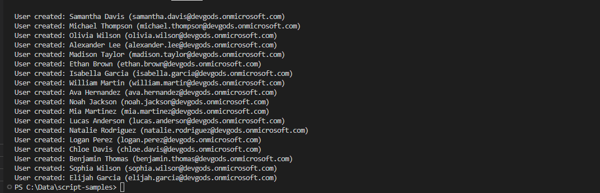

Create test users using MS Graph API from list or ask ChatGPT to generate test users
Summary
Create test users using MS Graph API from list or ask ChatGPT to generate test users. This script uses the ChatGPT model from OpenAI to generate a list of users. The script can also use a list of users that you provide.
Pre-requisites
Microsoft.Graph.SitesPowerShell module- An Open AI API key which can be done by creating an account for using Open AI API
- Once the key is obatined, set the value of
$openai_api_keyin the script with that key
- Once the key is obatined, set the value of

# Check if Microsoft.Graph module is already installed, if not install it
if (-not(Get-Module Microsoft.Graph)) {
Install-Module -Name Microsoft.Graph
}
# Connect to Microsoft Graph API with admin credentials
Connect-MgGraph -Scopes "User.ReadWrite.All"
# Configure variables
$domain = "mydomain.onmicrosoft.com" # change to your domain
$askOpenAI = $true # change to $false if you want to use the list of users above
$numUsers = 20 # change to integer value
$openai_api_key = "sk-xxxxxxxxxxxxxxxxxxxxxxxxxxxxxxxxxxxxxxxxxxxxxxxx";
# Get list of users from OpenAI API or use the list of users above
if ($askOpenAI -eq $true) {
$numUsers = 20 # change to integer value
$users = Get-ListOfUsers -numUsers $numUsers -openai_api_key $openai_api_key
}else {
# List of users to create
$users = @(
"Alice Smith",
"Bob Johnson",
"Charlie Brown"
)
# Number of users to create, change value to any number you want, just not exceeding the number of users in the list
$numUsers = $users.Count # change to integer value
}
# list of users to create in the format of "FirstName LastName" using $numUsers
$users = $users | Select-Object -First $numUsers
# Loop through the list of users and create their accounts
foreach ($user in $users) {
$name = $user.Split(" ")
$givenName = $name[0].Trim()
$surname = $name[1].Trim()
$displayName = $user.Trim()
$userPrincipalName = $name[0].ToLower() + "." + $name[1].ToLower() + "@" + $domain
$mailNickName = $givenName.Substring(0,3).ToLower() + $surname.Substring(0,3).ToLower() + (Get-Random -Minimum 100 -Maximum 999).ToString()
$PasswordProfile = @{
Password = 'MyPassword123!'
}
$user = New-MgUser -AccountEnabled `
-DisplayName $displayName `
-MailNickName $mailNickName `
-givenName $givenName `
-surname $surname `
-userPrincipalName $userPrincipalName `
-PasswordProfile $PasswordProfile
Write-Host "User created: $($user.DisplayName) ($($user.UserPrincipalName))"
}
# function to get user names from a list of users in format "FirstName LastName"
function Get-ListOfUsers {
param(
[Parameter(Mandatory = $true)]
[string]$numUsers
[Parameter(Mandatory = $true)]
[string]$openai_api_key
)
# $openai_api_key = "sk-xxxxxxxxxxxxxxxxxxxxxxxxxxxxxxxxxxxxxxxxxxxxxxxx";
$openai_api_endpoint = "https://api.openai.com/v1/chat/completions";
$data = @{}
$data["model"] = "gpt-3.5-turbo";
$data["messages"] = @(@{});
$data["messages"][0]["role"] = "user";
$messageContent = "create list of test users in format 'FirstName LastName' separated by :. Number or records to create: $numUsers ";
$data["messages"][0]["content"] = $messageContent;
$headers = @{
"Content-Type" = "application/json"
"Authorization" = "Bearer " + $openai_api_key
}
Write-Host "Calling OpenAI API to get list of users.";
$response = Invoke-WebRequest -Method Post -Uri $openai_api_endpoint -Headers $headers -Body ($data | ConvertTo-Json);
if ($response -and $response.StatusCode -eq 200) {
$responseObject = $response.Content | ConvertFrom-Json
$result = $responseObject.choices[0].message.content.Split(",")
$result = $result.split(":")
} else {
$result = $null;
}
return $result;
}
Check out the Microsoft Graph PowerShell SDK to learn more at: https://docs.microsoft.com/en-us/graph/powershell/get-started
Contributors
| Author(s) |
|---|
| Valeras Narbutas |
Disclaimer
THESE SAMPLES ARE PROVIDED AS IS WITHOUT WARRANTY OF ANY KIND, EITHER EXPRESS OR IMPLIED, INCLUDING ANY IMPLIED WARRANTIES OF FITNESS FOR A PARTICULAR PURPOSE, MERCHANTABILITY, OR NON-INFRINGEMENT.